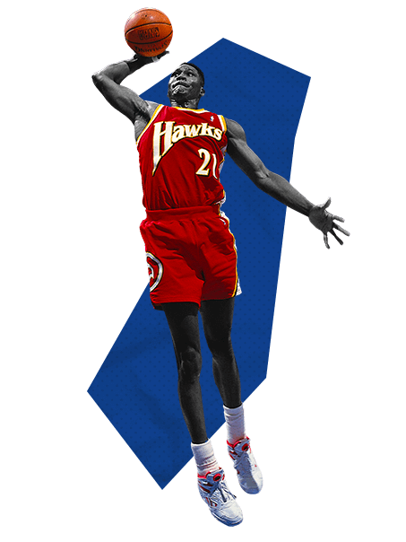
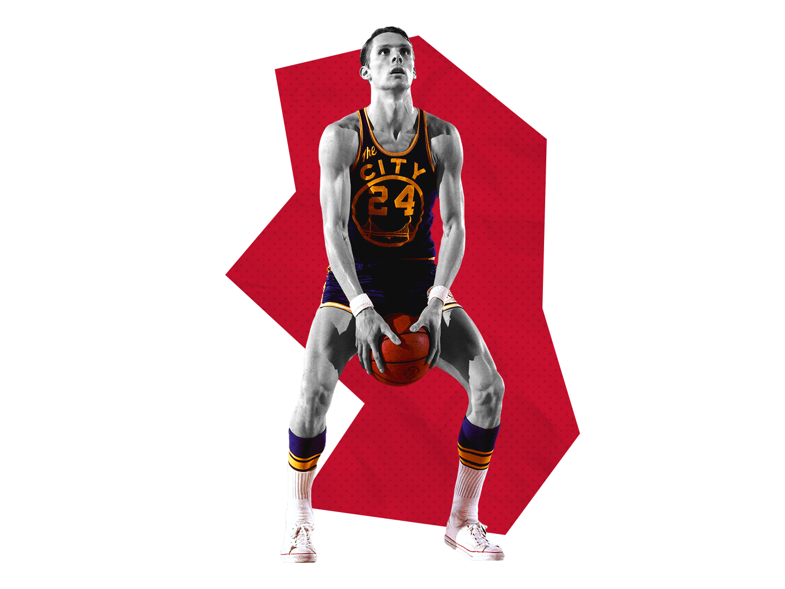
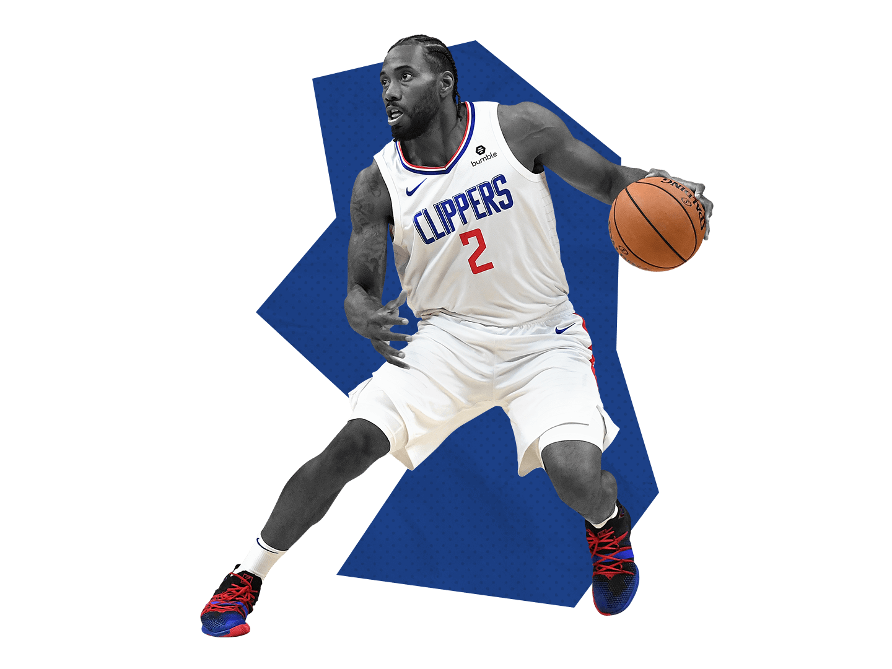
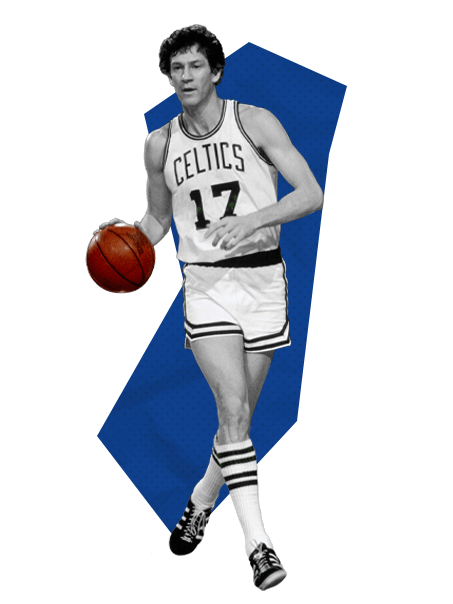
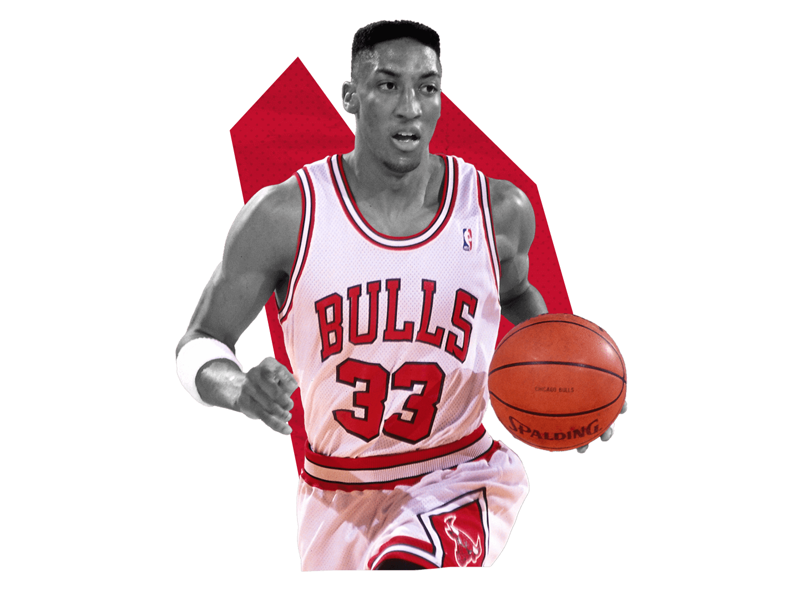
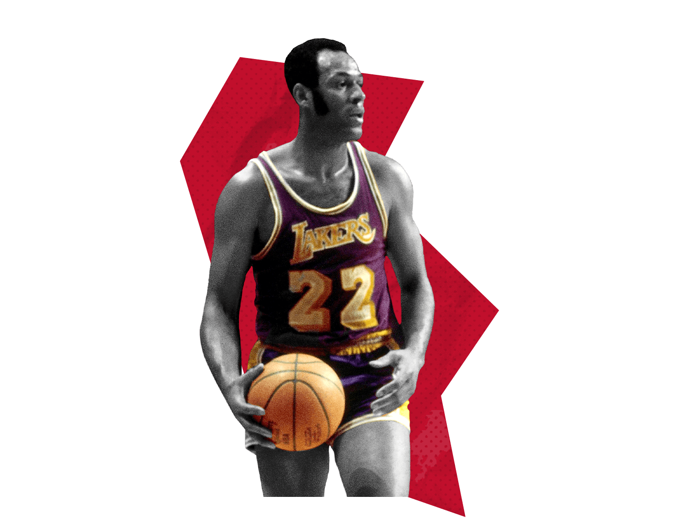
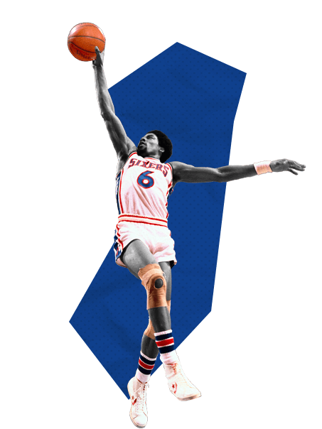
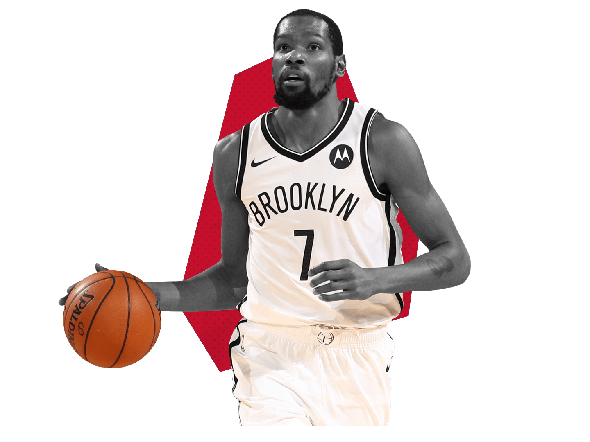
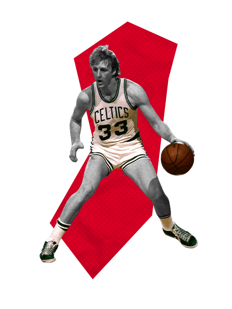
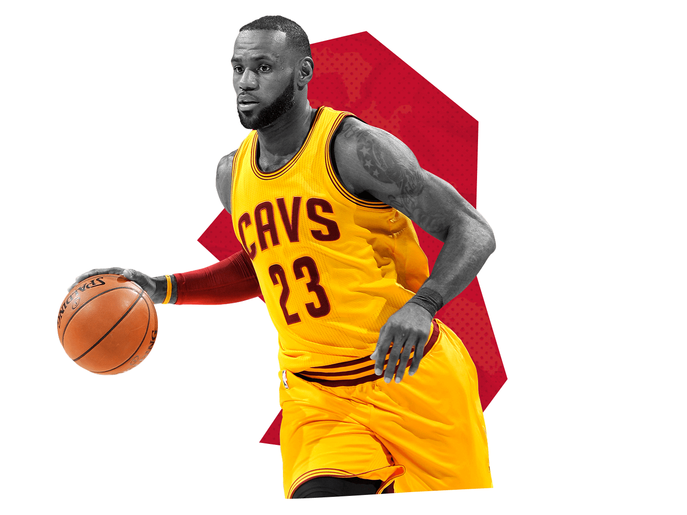

10. Dominique Wilkins
|
|

|
Accolades
- Championships None
- MVPs None
- 9 Time All-Star
- 7 Time All-NBA
- 1 Scoring Titles
- NBA Top 75 All Time
- HOF
Teams
- Atlanta Hawks (1982-1994)
- Los Angeles Clippers (1993-1994)
- Boston Celtics (1994-1995)
- Sacramento Spurs (1996-1997)
- Orlando Magic (1998-1999)
Stats
- 24.8 PPG
- 6.7 RPG
- 2.5 APG
- 1.3 SPG
- 0.6 BPG
|
9. Rick Barry |
|

|
Accolades
- 1 Championships (1975)
- MVPs None
- 1 Final MVPs (1975)
- 12 Time All-Star
- 1 Time All-Star MVP
- 6 Time All-NBA
- 4 Time All-ABA
- ABA All-Time Team
- 1 Steal Titles
- 1 Scoring Titles
- ROTY (1966)
- NBA Top 75 All Time
- HOF
Teams
-
San Fransisco Warriors/Golden State Warriors (1965-1967,1972-1978)
- Oakland Oaks (1968-1969) ABA
- Washington Capitols (1969-1970) ABA
- New York Nets (1970-1972)
- Houston Rockets (1978-1980
Stats
- 24.8 PPG
- 6.7 RPG
- 4.9 APG
- 2.0 SPG
- 0.5 BPG
|
8. Kawhi Leonard |
|

|
Accolades
- 2 Championships (2014, 2019)
- MVPs None
- 2 Final MVPs (2014,2019)
- 5 Time All-Star
- 1 Time All-Star MVP
- 5 Time All-NBA
- 1 Steal Titles
- 2 DPOY (2015,2016)
- 7x All-Defensive
- NBA Top 75 All Time
Teams
- Sacramento Spurs (2011-2018)
- Toronto Raptors (2018-2019)
- Los Angeles Clippers (2019-Present)
Stats
- 19.2 PPG
- 6.4 RPG
- 2.9 APG
- 1.8 SPG
- 1.6 BPG
|
7. John Havlicek |
|

|
Accolades
- 8 Championships (1963,1964,1965,1966,1968,1969,1974,1976 )
- MVPs None
- 1 Final MVPs (1974)
- 13 Time All-Star
- 11 Time All-NBA
- 8x All-Defensive
- NBA Top 75 All Time
- HOF
Teams
- Boston Celtics (1962-1978)
Stats
- 20.8 PPG
- 6.3 RPG
- 4.8 APG
- 1.2 SPG
- 0.3 BPG
|
6. Scottie Pippen |
|

|
Accolades
- 6 Championships (1991,1992,1993,1996,1997,1998)
- MVPs None
- 7 Time All-Star
- 1 Time All-Star MVP
- 7 Time All-NBA
- 1 Steal Titles
- 10x All-Defensive
- 7th All-Time Steals
- NBA Top 75 All Time
- HOF
Teams
- Chicago Bulls (1987-1998,2003-2004)
- Houston Rockets (1998-1999)
- Portland Trailblazers (1999-2003)
Stats
- 16.1 PPG
- 6.4 RPG
- 5.2 APG
- 2.0 SPG
- 0.8 BPG
|
5. Elgin Baylor |
|

|
Accolades
- Championships None
- MVPs None
- 11 Time All-Star
- 1 Time All-Star MVP
- 10 Time All-NBA
- ROTY (1959)
- NBA Top 75 All Time
- HOF
Teams
- Minneapolis Lakers/Los Angeles Lakers (1958-1972)
Stats
- 27.4 PPG
- 13.5 RPG
- 4.3 APG
- Not Recorded SPG
- Not Recorded RPG
|
4. Julius Erving |
|

|
Accolades
- 1 Championships (1983)
- 1 MVPs (1981)
- 3 ABA MVPs
- ABA All-Time Team
- 5x All-ABA
- 11 Time All-Star
- 2 Time All-Star MVP
- 7 Time All-NBA
- 1x All-Defensive
- NBA Top 75 All Time
- HOF
Teams
- Virginia Squires (1971-1973)
- New York Nets (1973-1976)
- Philidelphia 76ers (1976-1987)
Stats
- 24.2 PPG
- 8.5 RPG
- 4.2 APG
- 2.0 SPG
- 1.7 BPG
|
3. Kevin Durant |
|

|
Accolades
- 2 Championships (2017-2018)
- 1 MVPs (2014)
- 2 Final MVPs (2017-2018)
- 12 Time All-Star
- 2 Time All-Star MVP
- 9 Time All-NBA
- 4 Scoring Titles
- ROTY (2008)
- NBA Top 75 All Time
Teams
- Seattle SuperSonics (2007-2008)
- Oklahoma City Thunder(2008-2016)
- Golden State Warriors(2016-2019)
- Brooklyn Nets (2020-Present)
Stats
- 27.2 PPG
- 7.1 RPG
- 4.3 APG
- 1.1 SPG
- 1.1 BPG
|
2. Larry Bird |
|

|
Accolades
- 3 Championships (1981,1984,1986)
- 3 MVPs (1981,1984,1986)
- 2 Final MVPs (1984,1986)
- 12 Time All-Star
- 1 Time All-Star MVP
- 10 Time All-NBA
- ROTY (1980)
- 3x All-Defensive
- NBA Top 75 All Time
- HOF
Teams
- Boston Celtics (1979-1992)
Stats
- 24.3 PPG
- 10.0 RPG
- 6.3 APG
- 1.7 SPG
- 0.8 BPG
|
1. Lebron James |
|

|
Accolades
- 4 Championships (2012, 2013, 2016, 2020)
- 4 MVPs (2009, 2010, 2012, 2013)
- 4 Final MVPs (2012, 2013, 2016, 2020)
- 18 Time All-Star
- 3 Time All-Star MVP
- 17 Time All-NBA
- 1 Assist Titles
- 1 Scoring Titles
- ROTY (2004)
- 6x All-Defensive
- 2nd All-Time Scoring
- 7th All-Time Assists
- 10th All-Time Steals
- NBA Top 75 All Time
Teams
- Cleveland Cavaliers (2003-2010, 2014-2018)
- Miami Heat (2010-2014)
- Los Angeles Lakers (2018-Present)
Stats
- 27.1 PPG
- 7.5 RPG
- 7.4 APG
- 1.6 SPG
- 0.8 BPG
|